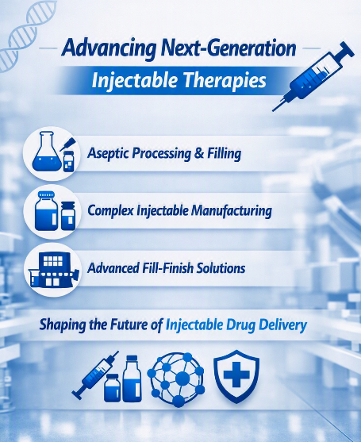

Advancing Injectable Manufacturing and Drug Delivery
21 August 2026

Injectable formulations play an important role in modern pharmaceutical treatment, from antibiotics and vaccines to oncology medicines, peptides, biologics, and long-acting therapies. Unlike oral dosage forms, injectables are administered directly into the body, making sterility, formulation stability, dose accuracy, and product quality critical throughout the manufacturing process.
The growing complexity of pharmaceutical pipelines is also changing the requirements for injectable manufacturing. Pharmaceutical companies increasingly look for experienced injectable manufacturers that can provide not only sterile filling but also formulation development, process optimization, analytical support, packaging, and commercial-scale production.
For companies that do not have sufficient internal infrastructure, injectable contract manufacturers or parenteral contract manufacturers can provide access to specialized facilities and technical expertise without the need to establish their own manufacturing operations. For companies seeking injectable contract manufacturers, the ability to support both clinical and commercial production can be particularly valuable.
Injectable Formulation Development
The formulation determines many of the characteristics of an injectable product. Depending on the active pharmaceutical ingredient (API) and intended application, the injectable product may be developed as a solution, suspension, emulsion, or lyophilized formulation.
Solubility is often one of the first challenges. Excipients, pH modifiers, surfactants, co-solvents, or other formulation strategies may be considered to achieve the required concentration and stability. Stability is equally important. A formulation needs to maintain its chemical and physical properties during manufacturing, transportation, and storage.
This makes injectable formulation manufacturing a highly controlled activity. The formulation must be designed with the eventual manufacturing process in mind rather than developed independently of production requirements. Specialized injectable formulation manufacturers can support pharmaceutical companies with formulation development, optimization, scale-up, and process transfer.
Sterile and Aseptic Processing
Sterility is one of the defining requirements of injectable drug products. Depending on the formulation, manufacturers may use terminal sterilization or aseptic processing. When the product cannot tolerate terminal sterilization, aseptic processing becomes essential.
Aseptic manufacturing requires carefully controlled cleanroom environments, qualified equipment, validated processes, environmental monitoring, and trained personnel.
In injectable manufacturing or parenteral manufacturing, contamination control must be considered throughout the entire production process. For pharmaceutical companies evaluating parenteral contract manufacturers, facility capabilities, regulatory history, aseptic processing technologies, and experience with similar products are important factors to consider.
Fill-Finish and Packaging
Once the sterile formulation has been prepared, it needs to be filled into its final container. Vials remain widely used, but injectable formulations may also be supplied in ampoules, prefilled syringes (PFS), cartridges, or other drug delivery systems.
Filling accuracy is particularly important because even relatively small variations can affect the dose received by the patient. Filling equipment must therefore be qualified, and the process must be validated to demonstrate consistent performance.
Container selection is also part of product development. The formulation needs to remain compatible with the primary packaging throughout its shelf life. Extractables and leachables, adsorption, permeability, light sensitivity, and container-closure integrity may all need to be evaluated.
For injectable formulation manufacturers, packaging considerations can influence formulation development from an early stage. Parenteral formulation manufacturers may similarly need to evaluate different container-closure systems when developing products for multiple markets or delivery formats.
Lyophilized and Complex Injectable Products
Some active pharmaceutical ingredients (APIs) cannot maintain the required stability in a liquid formulation. In such cases, lyophilization, or freeze-drying, can provide an alternative approach. Lyophilized injectables are processed under controlled freezing and drying conditions and are typically reconstituted before administration.
As pharmaceutical pipelines become more complex, pharmaceutical manufacturers are also seeing greater demand for specialized injectable products, including peptides, proteins, highly potent medicines, long-acting formulations, and advanced drug-delivery systems.
This trend is increasing demand for specialized parenteral formulation manufacturers with development and manufacturing capabilities suited to complex products.
The Role of CDMOs and CMOs
The technical capabilities of injectable formulation manufacturers and parenteral formulation manufacturers should also be assessed when formulation development is part of the outsourcing requirement.
Outsourcing has become an important part of injectable pharmaceutical development and production. A contract development and manufacturing organization (CDMO for injectables) may support a product from formulation development through clinical manufacturing, scale-up, fill-finish, and commercial supply.
For smaller pharmaceutical and biotechnology companies, working with a CDMO and CMO (contract manufacturing organization) can provide access to specialized sterile infrastructure without the capital investment required to establish an internal facility.
A CDMO for parenteral formulations can be particularly useful when formulation development and manufacturing need to remain closely connected. Keeping these activities with one partner can simplify technology transfer and reduce the number of manufacturing handoffs.
A CMO for injectables generally provides a more manufacturing-focused outsourcing model, giving companies access to established sterile production and filling infrastructure. Similarly, a CMO for parenteral formulations can support companies requiring specialized parenteral production capabilities.
The right outsourcing model ultimately depends on the product, development stage, required technology, production scale, and regulatory requirements.
Injectable Manufacturing Landscape
Injectable drug products are developed for complex therapies and patient-focused drug delivery systems. Prefilled syringes (PFS), autoinjectors, long-acting formulations, lyophilized products, peptides, biologics, and other advanced injectables are associated with specific manufacturing requirements.
At the same time, automation, advanced process monitoring, isolator technologies, and flexible manufacturing systems are used in manufacturing facilities to improve consistency and reduce manual intervention.
The injectable manufacturing landscape includes injectable contract manufacturers, parenteral contract manufacturers, and specialized CDMOs and CMOs.
Companies with capabilities in injectable manufacturing, parenteral manufacturing, and injectable formulation manufacturing support pharmaceutical developers across different stages from early development to commercial supply.
As pharmaceutical products become increasingly complex, manufacturers, injectable formulation manufacturers, and contract parenteral formulation manufacturers play a role across the global pharmaceutical supply chain.